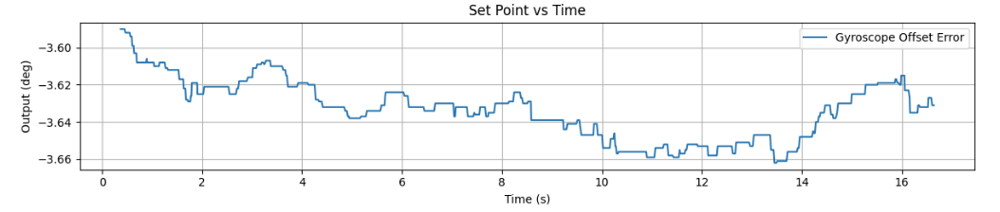
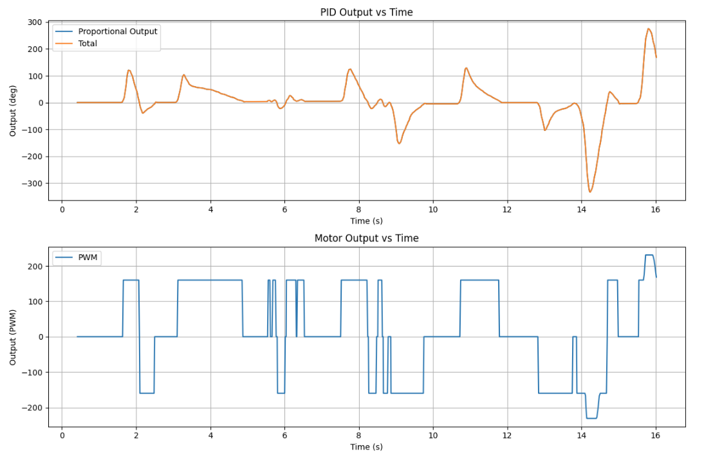
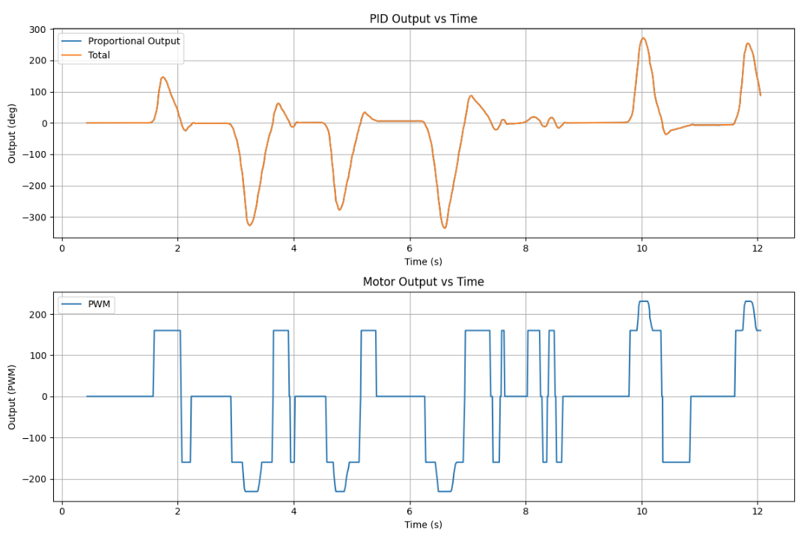
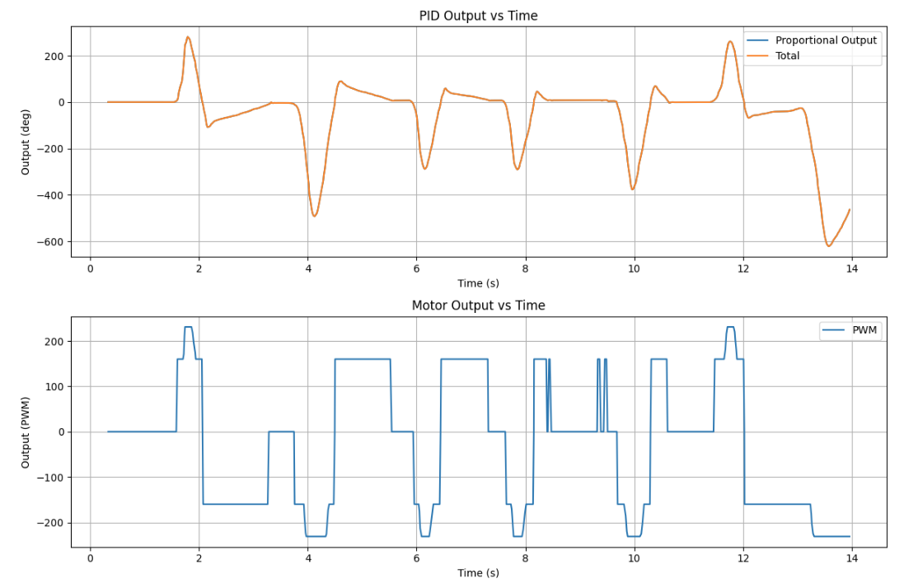
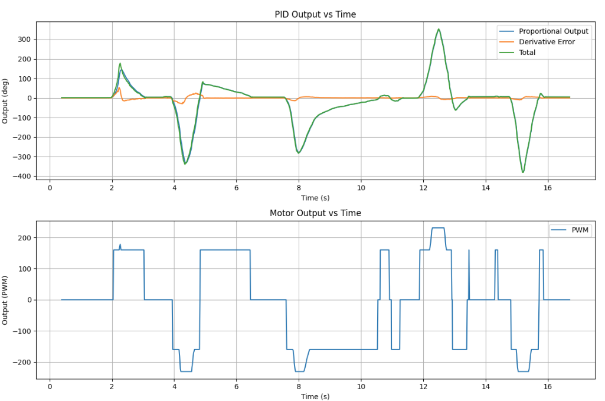
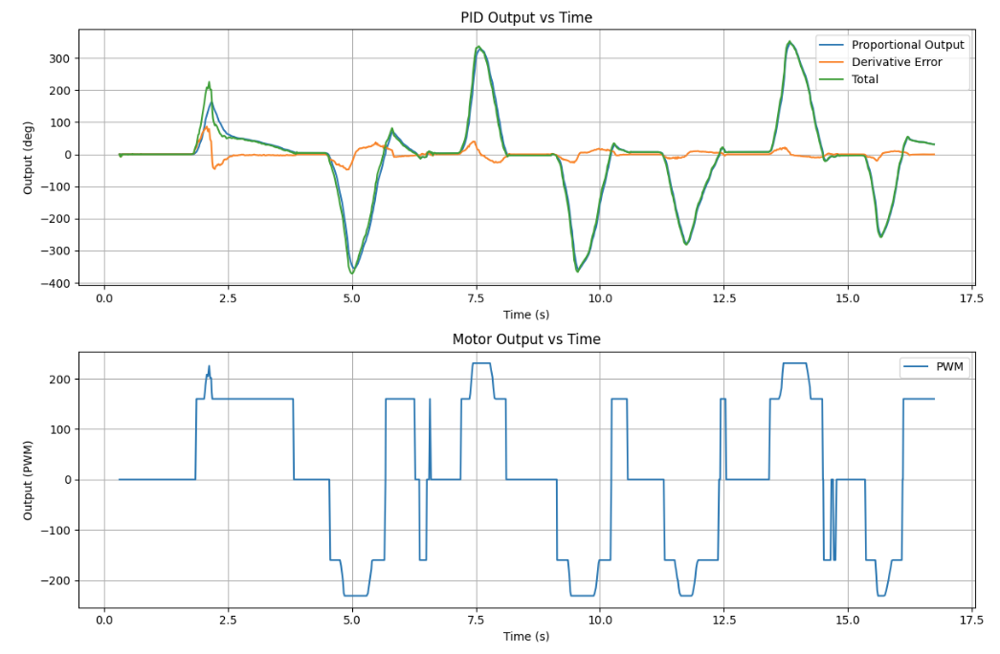
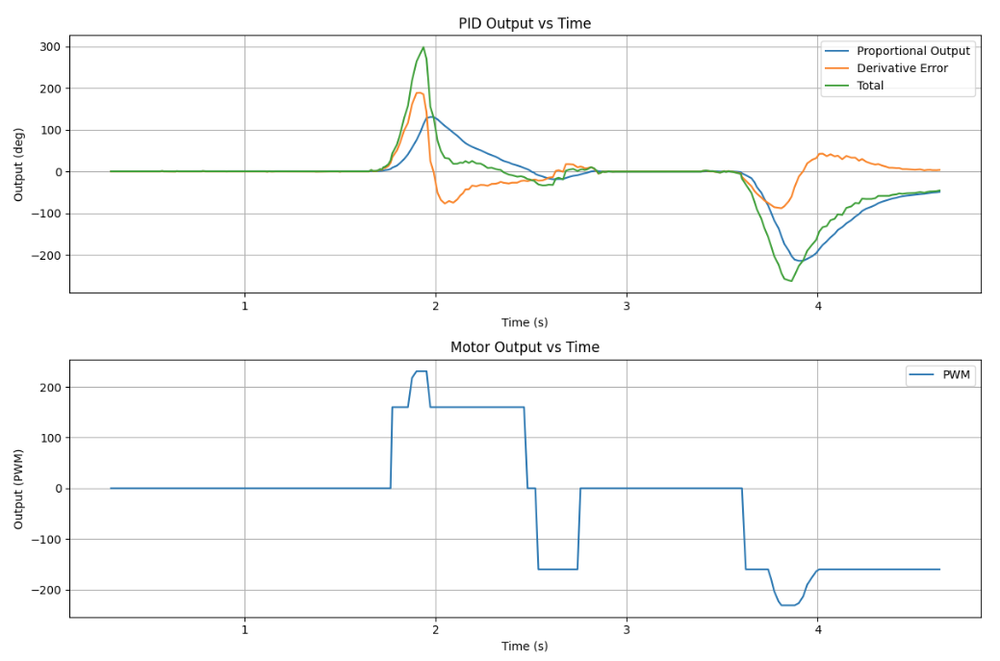

Lab 6: Orientation Control with IMU + PD
In this lab I used the IMU gyroscope and DMP yaw estimate to control the robot’s orientation.
1. Prelab: Bluetooth Debugging Setup
To send and recieve data over Bluetooth while the controller was running, I set up a command structure in the Arduino code named GET_PID_ORI_GAINS_AND_ORIENTATION to send my data to the arduino, and used added lines to my tx_estring_value.append to recieve the data back to my computer for post processing.
This code below shows how I can send values to arduino, and then send values back to my computer.
Bluetooth Gain / Setpoint Command
case GET_PID_ORI_GAINS_AND_ORIENTATION:
{
bool Received_input = robot_cmd.get_next_value(kp_ori)
&& robot_cmd.get_next_value(ki_ori)
&& robot_cmd.get_next_value(kd_ori)
&& robot_cmd.get_next_value(targetOrientation1);
if (!Received_input) return;
tx_estring_value.clear();
tx_estring_value.append("PID Ori Gains are Set, kp_ori = ");
tx_estring_value.append(kp_ori);
tx_estring_value.append(", ki_ori = ");
tx_estring_value.append(ki_ori);
tx_estring_value.append(", kd_ori = ");
tx_estring_value.append(kd_ori);
tx_estring_value.append(", Target Orientation = ");
tx_estring_value.append(targetOrientation1);
tx_characteristic_string.writeValue(tx_estring_value.c_str());
break;
}This code below shows how I can send data from my computer to arduino, recieve oher values back, and then parse them for plotting and analysis.
Python Call Example
def notif_handler(uuid, byte):
s = ble.bytearray_to_string(byte)
parts = s.split("|")
PID_ori = float(parts[14])
Perror_ori = float(parts[15])
Ierror_ori = float(parts[16])
Derror_ori = float(parts[17])
PWM_ori = float(parts[18])
PID_ori_list.append(PID_ori)
Perror_ori_list.append(Perror_ori)
Ierror_ori_list.append(Ierror_ori)
Derror_ori_list.append(Derror_ori)
PWM_ori_list.append(PWM_ori)
PID_ori_list = []
Perror_ori_list = []
Ierror_ori_list = []
Derror_ori_list = []
PWM_ori_list = []
ble.start_notify(ble.uuid['RX_STRING'], notif_handler)
ble.send_command(CMD.GET_ALL, "")
2. Orientation Control Goal
The goal of this lab was to have the robot rotate to a desired heading and stop there with a stable response. The main challenge was balancing speed and stability so the robot turned quickly enough without overshooting too much or oscillating around the setpoint.
3. IMU Input Signal and Orientation Estimate
To estimate the robot’s orientation, gyroscope data needs to be integrated over time. To do this we can use the do digital integration on the gyroscope to sum the angular velocity measurements over discrete time steps to estimate the rotation angle. A problem with this is that even small errors in angular velocity can build up over time and cause drift.
In my implementation, I used the IMU’s onboard Digital Motion Processor (DMP) and converted the quaternion output into yaw. This gave a cleaner heading estimate and helped reduce yaw drift compared to using a very simple raw gyro integration by itself.
Yaw Estimate From DMP Quaternion Data
icm_20948_DMP_data_t data;
myICM.readDMPdataFromFIFO(&data);
if ((myICM.status == ICM_20948_Stat_Ok) ||
(myICM.status == ICM_20948_Stat_FIFOMoreDataAvail)) {
if ((data.header & DMP_header_bitmap_Quat6) > 0) {
double q1 = ((double)data.Quat6.Data.Q1) / 1073741824.0;
double q2 = ((double)data.Quat6.Data.Q2) / 1073741824.0;
double q3 = ((double)data.Quat6.Data.Q3) / 1073741824.0;
double q0 = sqrt(1.0 - ((q1 * q1) + (q2 * q2) + (q3 * q3)));
double qw = q0;
double qx = q2;
double qy = q1;
double qz = -q3;
double t3 = +2.0 * (qw * qz + qx * qy);
double t4 = +1.0 - 2.0 * (qy * qy + qz * qz);
Gyro_yaw = (float)atan2(t3, t4) * 180.0 / PI + 3.8;
}
}We also needed to calibrate the yaw value to make sure it was displaying the accurate value. So I ran my DMP and made sure it did not more and watched the yaw value drift and reach steady state around -3.6 to -3.9 degrees. So I added a calibration offset of +3.8 degrees.
Calibration at +3.8 Degrees

4. P and D Gain Tuning
For this lab, I tested proportional and derivative control. Proportional control determined how strongly the robot reacted to error, while derivative control helped reduce overshoot and made the turning response more damped. I did not use integral control because PD already did a good enough job.
PD Controller Logic From My Code
error1P_ori = Gyro_yaw - targetOrientation1;
unsigned long now = millis();
PID_dt_ori = (now - PID_time2_ori) / 1000.0;
PID_time2_ori = now;
if (PID_dt_ori > 0) {
error1D_ori = (error1P_ori - error1Plast_ori) / PID_dt_ori;
} else {
error1D_ori = 0;
}
error1Plast_ori = error1P_ori;
control_ori = (kp_ori * error1P_ori) + (kd_ori * error1D_ori);
duty2 = abs(control_ori);
if (duty2 < duty1Min_ori) duty2 = duty1Min_ori;
if (duty2 > duty1Max_ori) duty2 = duty1Max_ori;These plots show the first threes tests I ran with the differnt kp values: Kp = 3.0, Kp = 3.75, Kp = 4.5
I ended using the 3.75 gain value because it had decent corrective angular velocity and decently low overshoot.
Test 1: Kp = 3.0

Test 2: Kp = 3.75

Test 3: Kp = 4.5

Test Video: Kp = 3.75
These next plots show the first threes tests I ran with the differnt kd values: Kd = 20, Kd = 40, Kd = 60
I ended using the 40 gain value because it dampened the agressive acceleration of the angular velocity and it decreased the overshoot compared to the 20 gain value, but it still had a good corrective angular velocity compared to the 60 gain value which was a bit too damped.
Test 1: Kd = 20

Test 2: Kd = 40

Test 3: Kd = 60

Test Video: Kd = 40
5. Deadband and Motor Command Logic
After tuning the turning gains, I added a deadband near the target heading so the robot would stop once it was close enough instead of constantly trying to correct tiny remaining errors. Without this, the robot could keep twitching back and forth near the setpoint.
In my code, the deadband for orientation was set to 2 degrees. If the robot was inside that range, the motors stopped. Otherwise, the robot turned left or right depending on the sign of the error.
Deadband Logic From My Code
float deadband_ori = 2.0;
if (fabs(error1P_ori) <= deadband_ori) {
stop_motors();
dutystate_ori = 0;
ori_finish = 1;
}
else {
ori_finish = 0;
if (error1P_ori > 0) {
turn_right(duty2);
dutystate_ori = 1;
}
else {
turn_left(duty2);
dutystate_ori = -1;
}
}Turning Functions
void turn_right(float duty1motor) {
float cali = 1.1;
duty1motor = (int)abs(duty1motor);
int duty2motor = (int)fabs(duty1motor * cali);
analogWrite(PWM_0, duty1motor);
analogWrite(PWM_1, 0);
analogWrite(PWM_2, duty2motor);
analogWrite(PWM_5, 0);
}
void turn_left(float duty1motor) {
float cali = 1.1;
duty1motor = (int)abs(duty1motor);
int duty2motor = (int)fabs(duty1motor * cali);
analogWrite(PWM_0, 0);
analogWrite(PWM_1, duty1motor);
analogWrite(PWM_2, 0);
analogWrite(PWM_5, duty2motor);
}6. Derivative Term and Sampling Time Discussion
The derivative term was useful for reducing overshoot, but it is also sensitive to noise. Since the heading estimate comes from IMU data, fast noise in the signal can make the derivative term jump around. In practice, derivative action works best when the signal is reasonably smooth.
Another thing that matters is the timestep. The derivative term depends on dt, so if the
sampling time is inconsistent then the derivative estimate will also be inconsistent. That is why I
tracked time during the loop and used it directly in the controller calculations.
Changing the setpoint while the robot is running can also create derivative kick, since the derivative term reacts strongly to rapid changes in error. For future improvements, filtering or derivative-on-measurement would help make the controller even smoother.
Timing in the Control Loop
const unsigned long starttime = millis();
for (int i = 0; i < Acc_length; i++)
{
const uint32_t t_us = micros();
// IMU read
// BLE processing
// controller update
// array logging
time_list[i] = (float)(millis() - starttime);
}8. Wind-Up Protection
For the 5000-level part of the lab, wind-up protection is still important to discuss even though I did not use integral control in the final PD controller. Integrator wind-up happens when the integral term keeps growing while the motors are saturated or the robot cannot respond well, which can lead to larger overshoot later.
In my code, I included clamping logic for the integral term. If I had kept integral control in the final implementation, this would help prevent the accumulated error from becoming too large.
Wind-Up Clamp From My Code
error1I_ori += error1P_ori * PID_dt_ori;
if (error1I_ori > 4000) error1I_ori = 4000;
if (error1I_ori < -4000) error1I_ori = -4000;